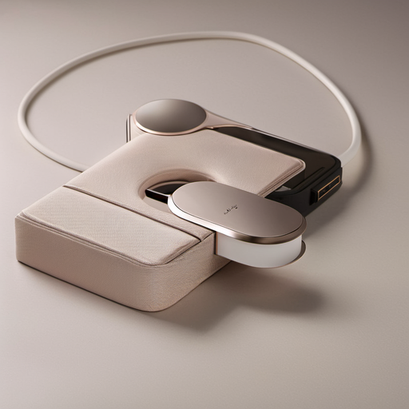
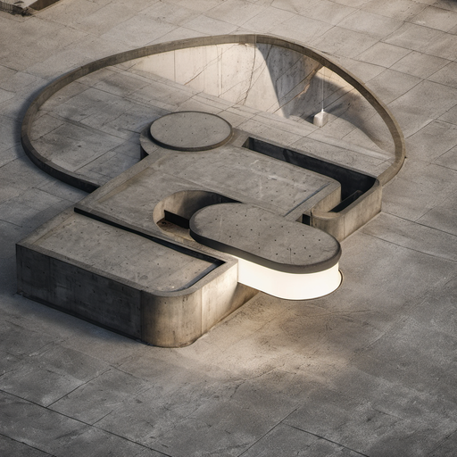

AFZ render
Layer Break
export1 α‑mask (29.5% frame coverage) slices each SDXL output into product-only and environment-only layers. All layers carry embedded alpha. No CSS masks. Stack and toggle.


Environment
Product — export1
Analysis
2
Product Meshes
1024²
Canvas
29.5%
Coverage
200mm
Lens
4
Total Meshes
3
Scenes
Full SDXL Outputs
3 Editorial Scenes
Full-scene depth map → ControlNet Depth SDXL (strength 0.85, dpmpp_2m+karras, CFG 7.0, 20 steps). Each output sliced using the export1 α‑mask to create the product/env layers above.


Pipeline
How it Works
Blender 5.1 → export1 α‑mask (EEVEE, film_transparent, 2 meshes, 1024²)
Blender 5.1 → full-scene depth (Cycles, 128 samples, 1024², 200mm lens, HORIZONTAL sensor_fit)
ComfyUI → ControlNet Depth SDXL → 3 scenes (Studio · Dramatic · Brutalist)
Python (Pillow) → offline α‑slice: export mask × SDXL → product_*.png + env_*.png
HTML → z1:env · z2:analysis(blend modes) · z3:product — zero CSS masks